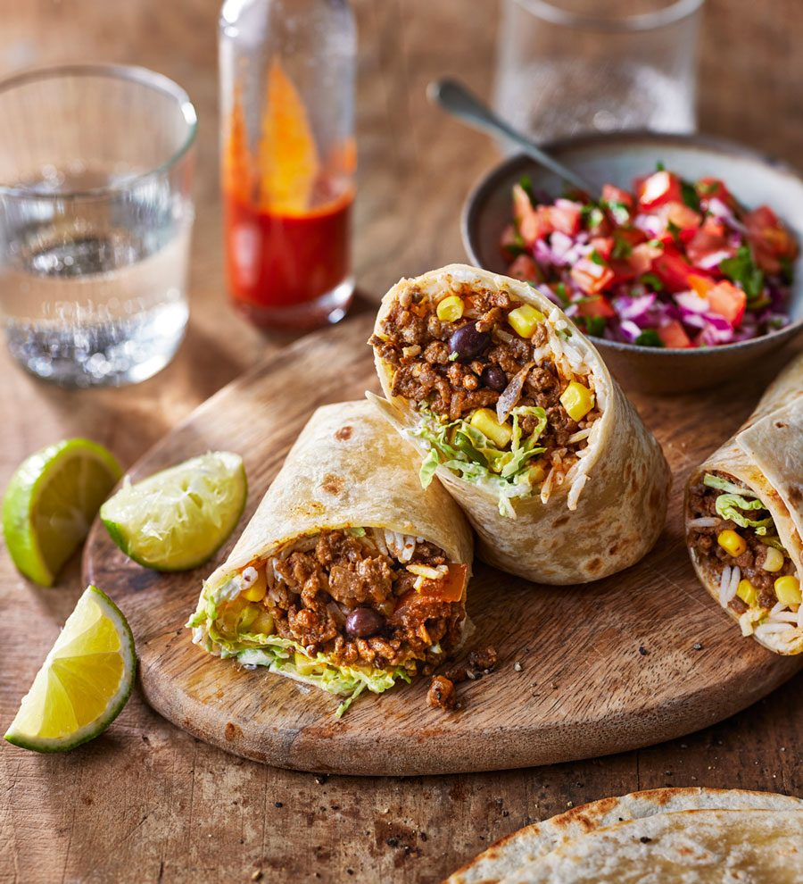

Burritos

Description
Burritos are a delicious and easy meal option. This recipe is vegan.
Ingredients
- 1 package uncooked tortillas
- 2 packages chorizo seitan
- 1 cup cooked rice of choice
- cilantro
- lime
- 1 can black or pinto beans
- ripe avocados
- salsa of choice
Steps
- Cook chorizo seitan according to package directions
- While seitan is cooking, cook tortillas according to package directions
- Mix cilantro and lime juice into cooked rice
- Prepare burritos, topping seitan and rice with sliced avocados, beans, and salsa